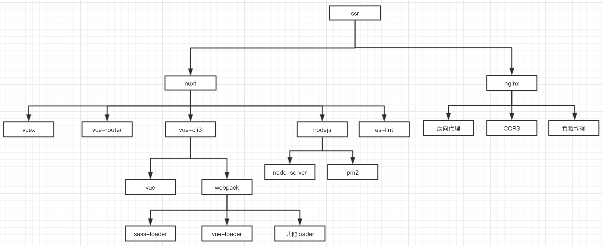
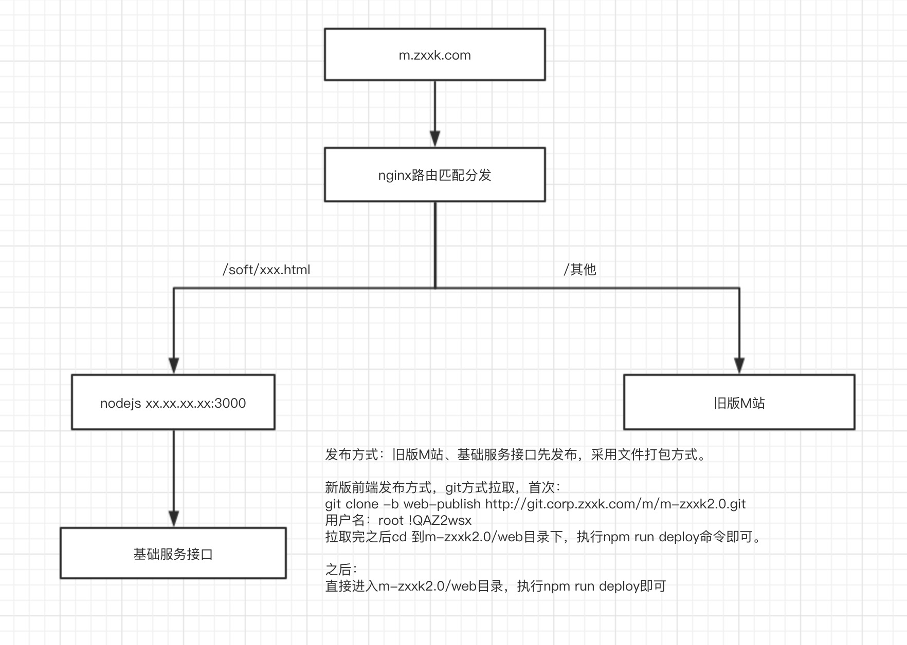

1. 整体架构
整体采用vue+vuex+vue-router+nuxt+webpack+es6+es8+eslint+nginx+pm2的技术架构。vue用作数据和视图引擎，vuex作为全局状态管理工具，vue-router用来管理路由跳转和参数传递，nuxt作为后端渲染引擎，webpack打包构建，es6模块化，同时也用到了es8的部分异步编程语法，eslint代码格式规范检查，nginx反向代理和解决跨域问题，pm2守护node线程和记录ssr日志。
各技术之间的依赖整合关系如下：

1.1. vue
采用vue2.5.17作为数据和视图引擎，利用vue-cli3的脚手架进行搭建，具体技术细节可参考vue-cli3官网：https://cli.vuejs.org/zh/guide/，在此之前需要有vue使用的基础，vue基础部分请参考vue官网：https://cn.vuejs.org/v2/guide/。
1.2. vuex
采用vuex作为全局状态管理工具，具体文档请参考官网：https://vuex.vuejs.org/zh/guide/
1.3. vue-router
采用vue-router管理路由切换和值传递，具体文档请参考官网：https://router.vuejs.org/zh/guide/
1.4. nuxt
nuxt2.3.4（集成了vue2.5.17）作为ssr框架，实现后端渲染，从而对搜索引擎友好。具体技术细节参考nuxt官网：https://zh.nuxtjs.org/guide。nuxt和vue的关系如下：
m-zxxk@1.0.0 /Users/zks/code/gitlab/m-zxxk2.0/web
└─┬ nuxt@2.3.4
└─┬ @nuxt/core@2.3.4
└─┬ @nuxt/vue-renderer@2.3.4
└── vue@2.5.17
1.5. webpack
nuxt也集成了对webpack的支持并且开放了扩展接口，webpack的配置方法参考官网：https://www.webpackjs.com/，项目中的用法参考nuxt.config.js文件。
1.6. es6
项目编码采用es6语法标准，es6语法规范可以参考这篇书籍：http://es6.ruanyifeng.com/#README。
项目模块化部分采用es6的最新标准，用export和import来定义和导入模块，利用babel进行转义和打包（框架中已集成）。
1.7. es8
主要用到了es8的async和await异步编程语法，解决异步回调地狱问题。
1.8. eslint
采用了es-lint进行代码格式的规范和格式化，编译时不规范的代码将会报错，并可结合开发工具进行按要求的格式化，也可以用命令来自动修复不规范的代码。
代码规范遵循vue/recommended规则。具体规则细节查看https://vuejs.github.io/eslint-plugin-vue/rules/
1.9. nginx
nginx用来配置反向代理，同时解决跨域访问的问题(项目中同时也集成了CORS的解决方案)。
通过配置虚拟映射，nginx同时起到了解决新旧M站之间平滑过渡的跳转问题。
nginx在生产环境也起到了负载均衡的作用。
具体nginx配置请查看环境配置章节。
1.10. pm2
pm2用来解决在生产服务器上的node线程的守护和管理问题，例如启动、重启、监控等。pm2同时用来解决生产服务器上SSR部分代码的日志记录问题，以便问题发生时快速定位。
1.11. 其他模块
其他模块请参考项目中的package.json文件，里面记录了项目中所有用到的模块和依赖，例如jsonp模块，用来兼容旧代码中支付部分的jsonp请求。详细用法请参考其官网：https://www.npmjs.com/package/jsonp。
2. 网络图
生产环境中新旧系统之间的关系如下：
